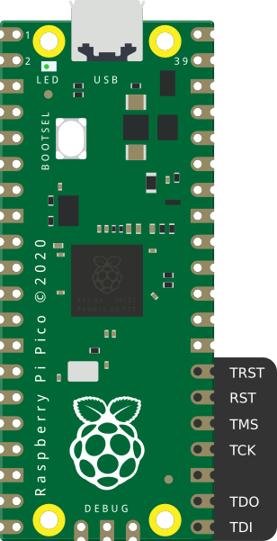
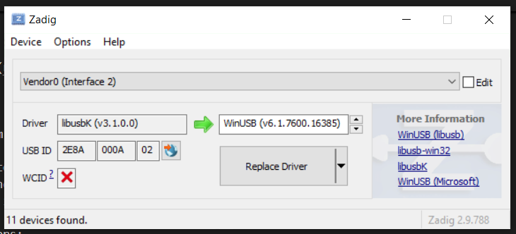
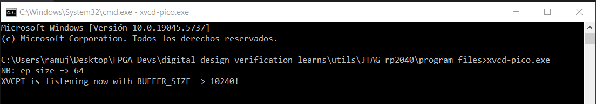
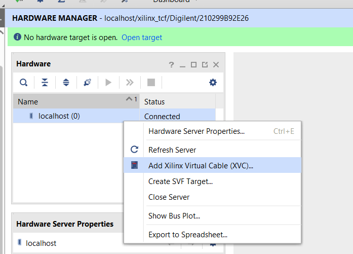
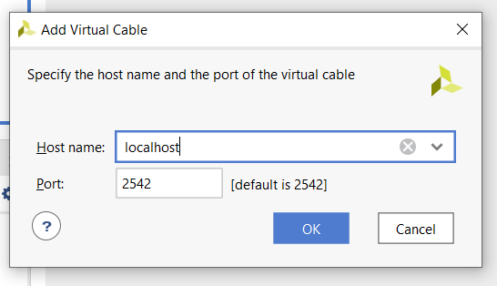

A cheap and open source method to program and FPGA is using a
Rasberry Pico as a JTAG cable. In order to do it you will find the
instructions based on the Github open-source project pico-xvc repository. In
folder program_files exists the necessary files to perform a
Xilinx FPGA load using a Windows Computer.
Conexions:
The pinout is as follows:

rasberry pinout
Steps:
Load the program into the la Rasberry Pi (RP2040):
Pressing the buttons BOOT and RST insert the USB cable into the
computer
When releasing the buttons, a new window would appear in the files
explorer
Put the uf2 file into that folder
Change the drivers:
Install Zading in the host computer (https://zadig.akeo.ie/)
Using Zadig install libusbK to the new device. You can
disconnect and connect it again in order to know which is it.

zadig
Execute the xvc-pico.exe from command window.

cmd
From Vivado Hardware Manager, add the Virtual Cable with the host
IP.

add_xvc

virtualcablejtag
Now it act as a normal JTAG adapter. Every time you want to use it,
it is necessary to only do steps 3 and 4.